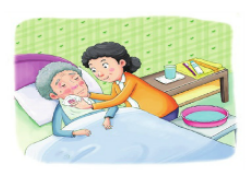
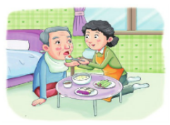
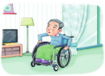
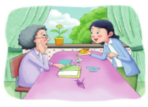
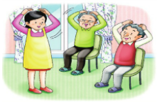

노인장기요양보험이란?
노인장기요양보험이란
'65세 이상의 노인' 또는 "치매, 뇌혈관질환 등 노인성만성질환이 있는 65세 미만의 자"가 6개월 이상 동안 혼자서 일상생활을 수행하기 어려워 공단으로부터 입소 수금자로 판정받은 경우 장기요양기관(시설/재가급여)으로 부터 신체활동 또는 가사활동, 인지활동 지원 등의 "장기요양급여"를 받을 수 있는 제도입니다.
장기요양등급구분
장기요양등급판정위원회에서 6개월 이상 동안 혼자서 일상생활을 수행하기 어렵다고 인정하는 경우 심신상태 및 장기요양이 필요한 등급 판정기준에 따라 다음과 같이 수급자로 판정합니다.

장기요양 1등급
심신의 기능상태 장애로 일상생활에서 전적으로 다른사람의 도움이 필요한 자로서 장기요양인정 점수가 95점 이상인 자

장기요양 2등급
심신의 기능상태 장애로 일상생활에서 상당부분 다른사람의 도움이 필요한 자로서 장기요양인정 점수가 75점 이상인 자

장기요양 3등급
심신의 기능상태 장애로 일상생활에서 부분적 다른 사람의 도움이 필요한 자로서 장기요양인정 점수가 75점 미만인 자

장기요양 4등급
심신의 기능상태 장애로 일상생활에서 일정부분 다른 사람의 도움이 필요한 자로서 장기요양인정점수가 51~60점 인 자
